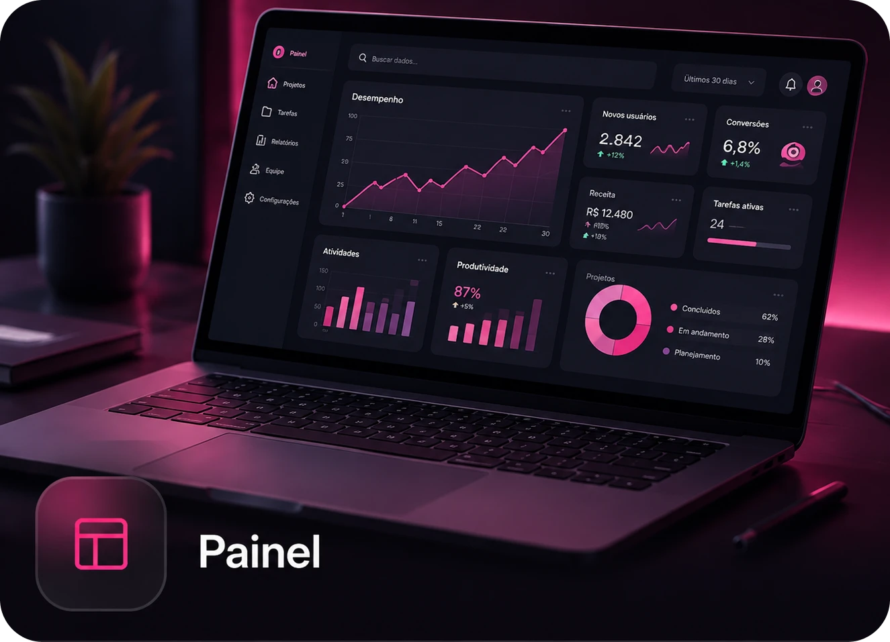
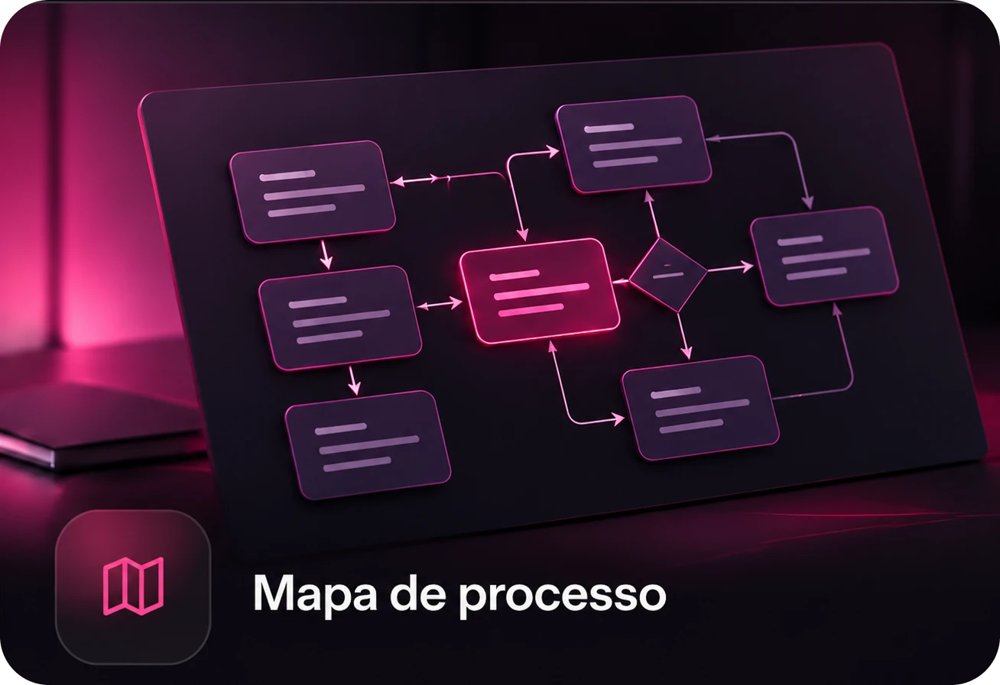
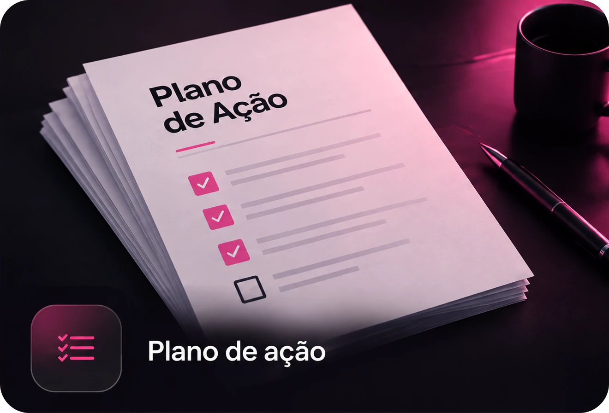

12 meses de capacitação, mentoria e consultoria para organizar prioridades, processos e lideranças e acompanhar como isso chega à operação.
Joe Weider atua em projetos de consultoria, mentoria e desenvolvimento de líderes ligados a estratégia, processos e gestão.

O dia começa pelo que apareceu primeiro. Problemas da equipe, decisões operacionais e imprevistos tomam o espaço que deveria ser usado para acompanhar prioridades.
As tarefas são distribuídas, mas decisões importantes continuam subindo para o empresário ou para poucos gestores.
Existem metas e indicadores, mas eles nem sempre orientam o que cada área faz no dia a dia.
Quando isso acontece, crescer começa a exigir mais controle justamente de quem deveria estar olhando o negócio de forma mais ampla.
O programa reúne três frentes ao longo de 12 meses. O que é discutido não fica separado da operação. A proposta é levar os temas para decisões, processos, acompanhamento e desenvolvimento das lideranças.
Conteúdo técnico e desenvolvimento de competências ligados aos desafios da empresa.
Acompanhamento individual e coletivo com Joe Weider para discutir decisões, prioridades e desenvolvimento das lideranças.
Diagnóstico, implementação de melhorias e acompanhamento por meio de indicadores e planos de ação.
Uma empresa conectada para crescer.
A primeira etapa trabalha metas de crescimento, planejamento e critérios para acompanhar o que precisa avançar.
Entregas previstas
A empresa identifica gargalos, revê processos e documenta como as atividades devem acontecer.
Entregas previstas
Quando tudo volta para poucas pessoas, delegar não resolve por completo. Esta etapa trabalha metas, acompanhamento, reconhecimento e desenvolvimento das competências necessárias às lideranças.
Entregas previstas
A aplicação parte das necessidades da empresa. Entram iniciativas que possam melhorar processos, testar novas soluções ou criar formas mais eficientes de trabalhar.
Entregas previstas
Passam a compor uma visão organizada do desempenho e das prioridades.
Ganham documentação, responsáveis e rotinas de acompanhamento.
As lideranças desenvolvem mais autonomia para decidir dentro de suas responsabilidades.
Passam a ter planos de ação e momentos definidos de revisão.
Ganha um processo para selecionar iniciativas, testar projetos e acompanhar o que faz sentido levar adiante.
O Acelerador faz sentido para empresas que já possuem equipe e operação e reconhecem situações como:
O programa pressupõe participação da empresa na implementação. O trabalho não se limita ao consumo de conteúdo.
Ao longo do programa, os temas trabalhados podem se materializar em documentos e ferramentas usados pela própria gestão.

Exemplo ilustrativo
Exemplo ilustrativo
Exemplo ilustrativoÉ um programa empresarial de 12 meses que combina capacitação, mentoria e consultoria para trabalhar estratégia, processos, lideranças e inovação.
O foco está em empresas de médio e grande porte que já possuem operação e equipe e enfrentam desafios de gestão, processos ou desenvolvimento de lideranças.
12 meses.
O treinamento é apenas uma das frentes. O Acelerador combina capacitação com mentoria e consultoria para que os temas discutidos também sejam trabalhados na implementação e no acompanhamento.
O primeiro contato passa pelo diagnóstico. A equipe conhece o cenário, os desafios e as prioridades da empresa antes da apresentação personalizada do programa.
Durante o diagnóstico, a equipe Axon pode esclarecer quem precisa participar e como o acompanhamento será organizado.
Isso depende dos desafios identificados e da composição da empresa. O diagnóstico inicial ajuda a definir quais lideranças e responsáveis precisam estar envolvidos.
O programa prevê indicadores, painéis, planos de ação, rotinas de acompanhamento e outras entregas relacionadas às quatro etapas.
É uma conversa para entender o momento da empresa, os principais desafios de gestão e a aderência ao programa. Solicitar o diagnóstico não significa contratar o Acelerador.
O material prevê apresentação personalizada após o diagnóstico. O valor e as condições de contratação são apresentados pela equipe comercial de acordo com a proposta preparada para a empresa.
Solicite o diagnóstico inicial gratuito e converse com a equipe Axon sobre os desafios atuais da empresa e a proposta do Acelerador.
Tire suas dúvidas antes de solicitar o diagnóstico. Se quiser entender melhor o programa antes de preencher o formulário, fale diretamente com a equipe Axon.
WhatsApp: (62) 99200-5555